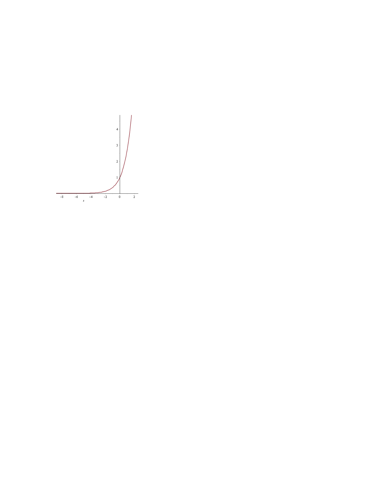
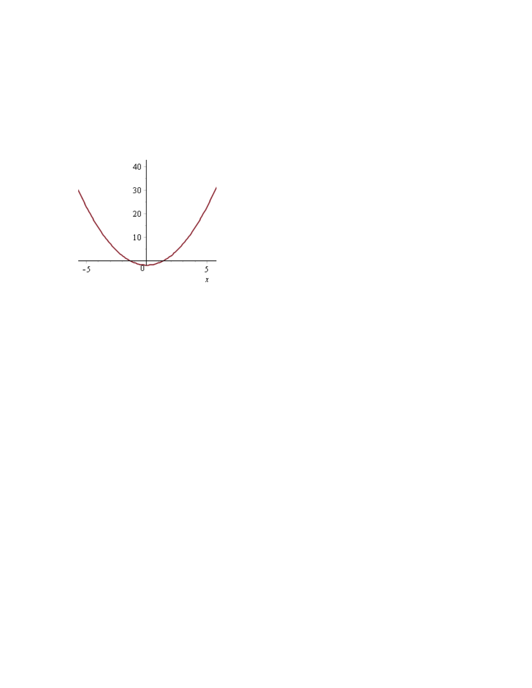

- (a)
- You are given that \(f''(x) > 0\) for all \(x\). Which of the following must be true about \(f(x)\) on the
region \(0 \leq x \leq 2\)?
- (i)
- There is a critical point between \(0\) and \(2\).
- (ii)
- There is a local maximum, but not enough information is given to determine where.
- (iii)
- \(f\) need not have a local maximum.
- (b)
- You are told that \(f''(x) > 0\) for all \(x\). Which of the following must be true about the graph
of \(y=f(x)\)?
- (i)
- The graph is a straight line.
- (ii)
- The graph crosses the \(x\)-axis at most once.
- (iii)
- The graph is concave down.
- (iv)
- The graph crosses the \(y\)-axis more than once.
- (v)
- The graph is concave up.
Only (v) must be true. For (i), the function \(f(x) = e^x\) provides a counterexample:
For part (ii), the function \(f(x) = x^2 -2\) provides a counterexample:

Part (iii) is clearly false since \(f''(x) > 0\) means that \(f\) is concave up. Part (iv) is false for any function.